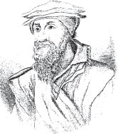

Dacă istoria modernității este istoria unei crize, începute cu pierderea certitudinilor medievale și apoi umanist-renascimentale, al cărei punct major de demarcație este mișcarea de reformă protestantă din secolul XVI, un prototip al eroului modern, ros de dubiul binelui și al răului, al arbitrului soartei sau, din contra, al valorii voinței și acțiunilor omenești, este românul istrian, Matthias Flacius Illyricus. Român istrian, căci, ignorat din păcate, nu numai de publicul larg, dar și de marii noștri învățați și istorici, se trage din stirpea "valahă," adică românească, din Istria, așa cum au pus deja în evidență în secolele XIX și XX mai mulți învățați italieni, și nu numai, printre care Ermanno Nacinovich, Giuseppe Vassilich, Emilio Comba, Carlo De Franceschi și, în bună măsură, Herman Stemberger, în recenta sa lucrare "Labinska povijesna kronika," Labin 1983.
 Probele asupra originii sale românești sunt multe; în limita plauzibilității, vor fi curând expuse într-o revistă istorică. Mă voi mărgini a zice aici numai că în Istria secolului XV și prima jumătate a secolului XVI, exista o puternică prezență românească, cum o vădesc mărturiile istorice, foarte numeroase, sute de documente venețiene, austriece, croate, ungurești etc., toponomastica peninsulei și onomastica. Și mai mult decât atât, limba română s-a vorbit la 12 km la sud de Albona, la Schitazza, până către sfârșitul secolului XIX și se vorbește și azi la mai puțin de 20 km la nord, la Sușnievița, Noselo, Sucodru. Revenind la Matthias - sau Mattia - Flacius, el se naște în orășelul Albona - azi Labin - din Istria, aparținând atunci de Veneția, la 3 martie 1520, avându-l ca tată pe Andreas - Andrei - Vlacich, nume provenind de la un etnonim, acela de Vlah, latinizat în Flacius, și mamă pe Giacomina Luciani, dintr-o familie nobilă din Albona.
Casa în care se naște, după relatarea unuia dintre biografii săi, canonicul Pietro Stancovich, se afla pe un teren din cuprinsul Albonei, aparținând din vechime familiei sale, chemându-se de aceea "Câmpia Valahului".
Tânărul Matthias Flacius rămâne în Albona până la etatea de 16 ani, punând aici bazele studiilor sale de latin, literatură italiană, religie, istorie și geografie, avându-l ca dascăl pe milanezul Francesco Ascerio. La 16 ani, Flacius lasă urbea natală, pentru studii mai înalte și pleacă la Veneția, unde îl are dascăl pe umanistul Egnațiu - sau Cipelli - fost elev, la rândul său, al marelui umanist florentin de la curtea lui Lorenzo de Medici, Angelo Poliziano. Aici el studiază, printre alte materii, limba greacă veche, ebraica și teologia, de care se simțea în mod deosebit atras.
La Veneția, era, în acel timp, superior al ordinului fraților franciscani, un faimos predicator, Baldo Lupetina, rudă a sa din partea mamei, căruia Flacius i se adresează, cerându-i să intre în ordinul franciscanilor, chiar la Padova sau la Bologna, deoarece, fire meditativă, se simțea puternic atras de viața monahală. Baldo Lupetina, care va deveni curând, împreună cu Pier Paolo Vergerio, episcopul de Capodistria, unul dintre primii protestanți italieni și va fi condamnat de Inchiziție, îl sfătuiește însă, și-l convinge, să meargă în Germania, la Wittenberg, unde predica Martin Luther. Flacius este repede convins, căci germanii protestantismului pătrunseseră în toleranta Republică a lui San Marco și în 1540 el pleacă către Germania, oprindu-se un an la Basel, pentru a-și desăvârși studiile și apoi, aproape un alt an, la Tübingen. În sfârșit, la finele lui 1541, ajunge la Wittenberg, citadela protestantismului, unde este bine primit, ajungând să-l cunoască și să se bucure de ocrotirea și prietenia caldă a marelui Philip Melanchton, camaradul apropiat al lui Luther. Aici adâncește studiul Sfintelor Scripturi și al limbilor vechi, între care ebraica, devenind în sec. XVI unul dintre cei mai mari cunoscători ai ei pe plan european, fiind numit, foarte tânăr încă, la 1543, profesor la catedra nou-înființată de limbă ebraică, la Universitatea din Wittenberg. Anii săi de adânci studii se împletesc cu o mare tulburare sufletească, o sfâșiere în adâncul cel mai tăinuit al sufletului; de o parte atașamentul la religia catolică a străbunilor - Istroromânii, de când apar în Istria, apar de confesiune catolică, nici un document nu vorbește despre vreo convertire a lor de la ortodoxism la biserica romano-catolică -, de alta este atracția la noul crez luteran. Trăiește frământat de îndoieli, fără să aibă încă puterea să aleagă; pe de o parte este religia străbună, asemeni unei Patrii care-l leagă de toată viața sa dinainte, de părinți, de locurile natale, de alta este amenințarea păcatului, teama osândei eterne. Părăsirea religiei îi apare tot atât de dureroasă ca și părăsirea sufletească, spirituală, a Patriei, o rupere de sine însuși și nu reușește să treacă această "barieră". Cât seamănă cu zbuciumul sufletesc al unui exil...
Printre numeroasele sale publicații teologice (peste o sută), considerate de unii teologi protestanți din secolul XIX, ca secundare în epocă numai celor ale lui Luther, acest travaliu sufletesc este descris într-o emoționantă confesiune, în autobiografia sa apărută în 1549 în limba latină, intitulată "Apologia Matthiae Flacii Illyrici ad scholam Vitebergensem in Adiaphororum causa," reluată în 1559 în limba germană, în care, pe lângă emoționantele pagini autobiografice, se adresează profesorilor de la Wittenberg, conjurându-i să nu renunțe la ortodoxia doctrinală protestantă. Unele dintre paginile sale autobiografice sunt adevărate pagini literare, izvorâte din adâncul sufletului, care îl apropie pe Flacius atât de mult de sensibilitatea noastră contemporană, în special de cea a existențialismului. Cugetările asupra predestinației omului, depinzând în întregime de o hotărâre divină precedentă și necunoscută nouă, îndoiala asupra alegerii pe care trebuia să o facă și nu găsea puterea să o înfăptuiască, teama unui ireparabil pas greșit, nesiguranța asupra viitorului hărăzit de Justiția divină inapelabilă, conform învățăturii protestante, îi măreau zbuciumul, împingându-l la disperare, până la a-și dori în unele clipe moartea, ca pe o binefacere. Multe ori, ne spune Flacius cu sinceritate, stătu în îndoială, dacă merita sacrificarea vechii religii, părăsirea locurilor natale, unde nu s-ar mai fi întors, deoarece considerat eretic, acest sacrificiu pentru noua religie. După trei ani de sfâșietoare frământări, neîmpărtășite nimănui, din cauza mândriei sale, ne-o spune Flacius însuși, într-o zi din 1544, găsi curajul să-și deșerte povara sufletului, unuia dintre cei mai apropiați prieteni ai săi din Wittenberg, diaconului Frederic Baccovio. Suntem la punctul cel mai adânc al crizei, care duce însă la grabnică vindecare; Baccovio, cu sprijinul lui Melanchton, îl conduce pe Flacius la Luther, care-i acordă deplină încredere și prietenie. Luând cunoștință de zbuciumul său sufletesc, Luther, cu dragoste aproape părintească (avea 37 de ani mai mult decât Flacius), porunci rugăciuni ale întregii comunități protestante din Wittenberg pentru alinarea zbuciumului sufletesc al străinului. Din acea clipă, puterea miraculoasă a rugăciunilor sau a solidarității omenești, Flacius trece acea "barieră" dintre vechea patrie și noua patrie spirituală, devenind protestant și consacrând, în afara oricărei îndoieli, întreaga sa viață întăririi și răspândirii noii religii. (Are în acest sens contacte și cu comitele Timișoarei, Petro Petrowijth – Petru Petrovici - la 1550).
Viața sa este de acum înainte o acțiune continuă pentru combaterea inamicilor protestantismului, din afară sau dinăuntru, protestanții care se abat de la puritatea doctrinei lui Luther.
"Nostris notisimus homo et magnae fidei," îl numește Luther, "eu îl stimez foarte mult și după moartea mea toată speranța este pusă în dânsul". Urmează puțini ani liniștiți în viața lui Flacius, în 1545 căsătorindu-se cu fiica unui pastor protestant, la nunta sa, în cercul apropiaților săi, aflându-se însuși Luther. Anul următor, în 1546, Luther însă moare, iar fragila pace dintre protestanți și catolicii germani, ale căror interese le reprezenta împăratul Carol al V-lea, în "Imperiul căruia soarele nu apunea niciodată," ia curând sfârșit. Trupele catolice, conduse de prințul elector Moritz von Sachsen, ocupă în 1548 Wittenberg-ul; Melanchton rămâne în oraș, supunându-se noii autorități catolice și editând faimosul "Interim" de la Augsburg, o încercare provizorie de conciliere cu catolicii până la un viitor conciliu general al bisericilor (conciliul de la Trento, deja în curs, nu dădea nici un rezultat în acest sens). Flacius, pentru a nu renunța la apărarea pozițiilor ortodoxe ale protestantismului, contra Interim-ului redactat de Melanchton, părăsește Wittenberg-ul, plecând la Magdeburg, apoi, după câțiva ani, la Jena. Începe astfel o continuă perindare, izgonit dintr-un oraș german în altul, din cauza intransigenței doctrinei sale, în opoziție cu doctrina mai conciliantă ce o ia treptat mișcarea protestantă, sub influența lui Melanchton. Păcatul este "forma substantialis," nu "accidens," este punctul de ciocnire a lui Flacius și al partizanilor săi cu restul mișcării protestante. (Păcatul este în "natura" omului, și nu un "accident," o întâmplare). Omul este carne, afirmă el, iar cugetul și inima omului sunt supuse cărnii: de aceea omul nu se poate mântui niciodată prin faptele sale, căci toate sunt impure, dictate de carne: "vedem cu ochii noștri, cum astăzi totul este îndreptat către pântec". De aceea, cei care se vor mântui de osânda, damnațiunea eternă, se vor mântui nu prin meritele lor, ci numai prin credință și prin meritele lui Isus Hristos, care s-a jertfit pentru noi, după alegerea și voința suverane ale lui Dumnezeu.
Un crez care nu lasă loc decât credinței și nici unul voinței sau faptelor omului, ca de altfel și învățătura lui Luther, împinsă însă mai departe, extremizată de Flacius, prin afirmația că păcatul este natură a omului, "substanță," și nu "accident," la fel în fond cum afirmau și vechii bogomili, atât de aproape de locurile unde s-a născut Flacius... Pentru aceasta, Flacius va fi în conflict cu restul mișcării protestante, până la moartea sa, în 1575, fiind acuzat de maniheism. Va fi reabilitat de către teologii protestanți din secolul XIX, deși "fascinația" pozițiilor sale radicale a rămas vie de-a lungul secolelor în lumea protestantă. Personalitatea și credința sa, pe cât de tenebroase par la o primă vedere, sunt inspirate însă de o profundă credință și abandonare, lepădare de sine și a propriului destin individual, în mâinile Providenței, asemeni marilor mistici, un Meister Eckhart, de exemplu.
(și gândesc că așa cum într-o manieră doar spirituală, privind numai lumea de apoi, Flacius "prevedea" damnarea eternă, aceasta o va face însă într-o manieră concretă, reală, pentru mii de oameni, un revoluționar, cu numele de Robespierre, din a cărui sămânță vor răsări revoluțiile secolului XX, rod al inversiunii cerurilor cu pământul, pusă în operă teoretic, de către Marx și materialismul dialectic, aplicat de Lenin...).
Secolul XVI, secol poliedric, este primul secol al modernității, căci Renașterea este, după unii, doar un ev mediu poleit în razele splendidului său crepuscul (V. Huizinga versus Burckhardt). Veacul al XVI-lea începuse printr-o glorificare a cărnii, aproape vulgare, a lui Rabelais, și încheiate certitudinile umaniste și renascimentale, sfârșea prin scepticismul lui Montaigne, inspirat de relativitatea adevărului, în funcție nu numai de propriul "eu" schimbător, dar și de geografie, moravuri și istorie, inspirând după două secole și unui spirit sigur de sine, al lui Montesquieu, în "L’esprit des lois," relativitatea legilor în funcție de moravuri, istorie, geografie, punând astfel bazele gândirii europene întemeiate pe diferență, opusă "gândirii unice"; fără a mai vorbi de marea stagiune a raționalismului cartezian din secolul următor, îmbinate de Blaise Pascal cu "l’esprit de finesse" al inimii, al sentimentului, sau de marea stagiune a artelor plastice din același secol al XVI-lea, în care siguranța realității și a culorii din tablourile lui Rafael sfârșea în frământarea tragică, în afara oricărei ordini și armonii renascimentale, a "Judecății de Apoi," a marelui Michelangelo, sau în deformarea realului și problematicitatea sa din tablourile lui El Greco, de pildă.
Veac poliedric, în care scrierile cu conținut autobiografic ale lui Matthias Flacius, prin frământările și examenul psihologic adânc al ființei omenești pe care le revelează, un existențialism "avant la lettre," aduc, dincolo de doctrinele religioase, contribuția unui conațional al nostru, vai, necunoscut de noi, la spiritualitatea secolului care a pus bazele erei moderne. Secol al lui Macchiavelli, dar și al lui San Juan de la Cruz, în care spiritualitatea religioasă românească se mai afirmă prin profundele "Învățături ale lui Neagoe Basarab către fiul său Teodosie," magistral analizate de C. Noica, sau prin prezența și faptele excepționale de credință ale călugărului Ieremia Stoica Valahul la Neapole, beatificat în 1983 de Papa Ioan Paul al II-lea.
Emil Petru Rațiu
October 19, 2004
© 2004 Adevărul Literar și Artistic